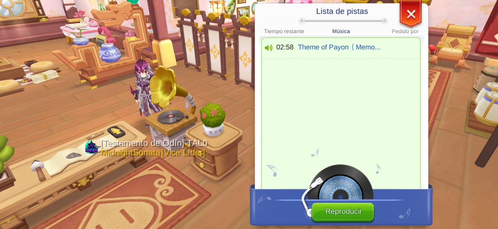

Vision General
En Ranarok M 2 Eternal Love existe un sistema de "Tiempo de batalla" para regularizar los botines de zeny y experiencia que pueda obtener un personaje dentro del juego. Esto sirve para reprimir un poco la modalidad de perma afk farm, obtención de materiales y desestabilizar el mercado de Intercambio, producciones en masa de Cartas desvalorizando su precio, etc.
En la presente guia le daremos información acerca del Tiempo de batalla o Tiempo de combate y como obtener más de este
Tiempo de Combate: Explicación
El tiempo de batalla es compartido entre todos los personajes de una cuenta.
Cada día, al superar un tiempo de batalla determinado, la experiencia y los objetos obtenidos empezarán a disminuir.
Si cualquier personaje de una cuenta tienen un nivel basico de 160 o superior, el tiempo de batalla diario es de 450 minutos. Si no se dispone de ningun personaje de nivel 160 o superior, el tiempo de batalla es de 300 minutos. Cada día a las 5:00 se recuperan los 300/450 minutos del tiempo de batalla. El tiempo de batalla sin usar se puede acumular hasta un máximo de 900/1350 minutos.
PvP no se incluye en el tiempo de batalla. MINI y MVP no están afectados por la regla de disminución.
Si tus compañeros y tú están en un mismo mapa, todos los compañeros comparten el tiempo de batalla.
El tiempo de combate restante se muestra en minuto, el número no cambiará. (por ejemplo, cuando el tiempo restante sea 59 minutos y 30 segundos, se mostrará como 60 minutos).
Puede ver toda esa información dirigiendose a "Mas"
luego seleccionar la siguiente opción:
Y le aparecerá los detalles que acabo de mencionar
¿Cómo aumentar el Tiempo de Combate?
La primera forma es escuchando musica
Dirigase a Prontera Sur y ahi abrá un toca discos
La comunidad suele poner musica ahí para todo el publico, si no la hay, puede usted mismo poner un disco seleccionando el tocadiscos poring
Poner música usted mismo también le desbloqueará nuevos logros para su libro de aventura que otorgarán recompensas
Escuche musica unos minutos y empeará a recueprar tiempo de combate
Seleccione discos suficientes para recuperar un maximo de 90 Tiempo de Combate
Puede encontrar tocadiscos en Prontera Sur (El mas recomendado), en el HALL de la Guild también:
Y en su casa, o el de un amigo también, fabricandolo, pero eso se hablará en otra guia
Asi que ahora, no dude en poner los exitos de Raganrok Movile y a esuchar musica!
( ^o^)/
La segunda forma es consumiendo pocion de Mentor
Hagase Mentor cuando pueda y busque un estudiante motivado y activo, que realice las misiones diarias, consuma tiempo de combate, etc. eso le ira ganando a usted como mentor Liencia de Gran Mentor
Y con esas Licencias de Gran Mentor intercambiarlas por varios articulos valiosos para usted, entre ellas: Poción de Mentor
Poción de Mentor puede ser usado 6 veces al día y cada una otorga 30 minutos de combate, usar 6 veces esta pocima otorgará un maximo de 180 tiempo de combate! al día!, una verdadera salbajada como dicen los españoles
Hagase Mentor y administre bien sus Licencia de Gran Mentor.
Si tienes alguna duda, consulta o sugerencia, Contáctame
+56 9 89096503